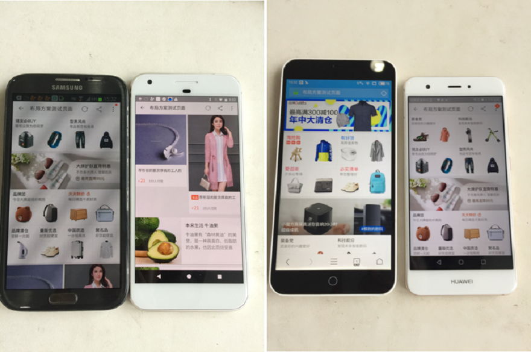
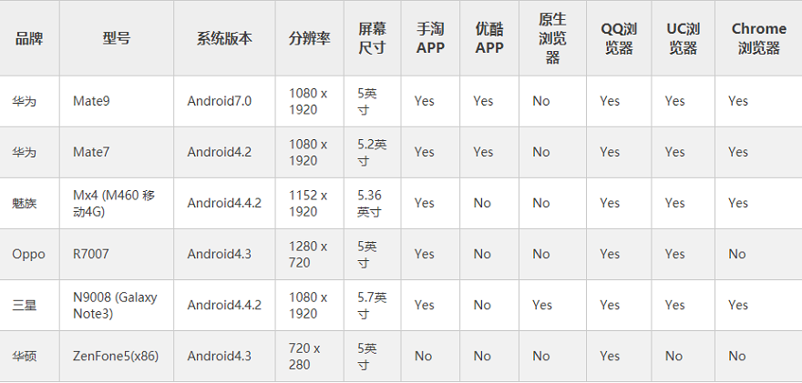
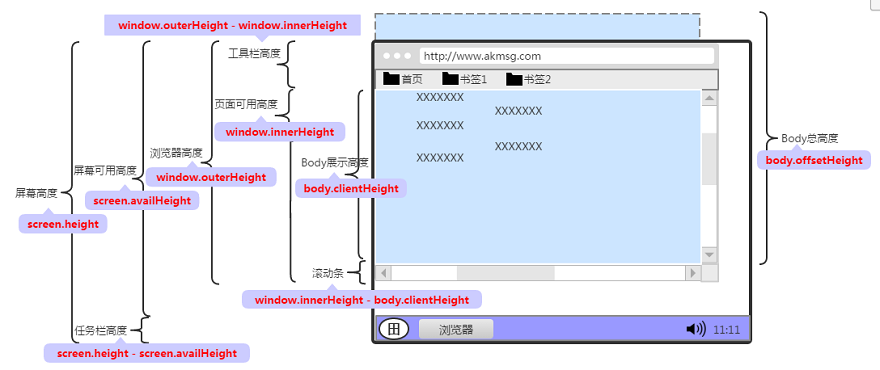
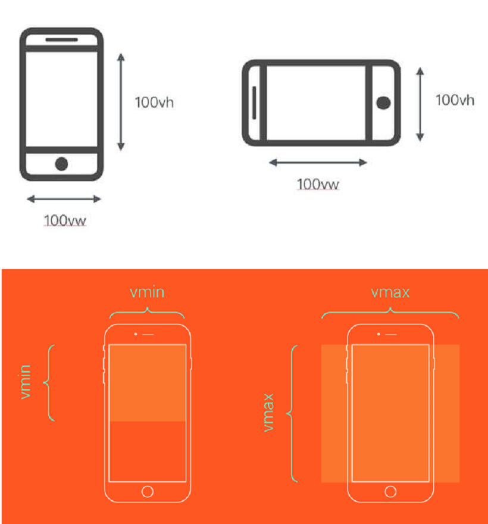
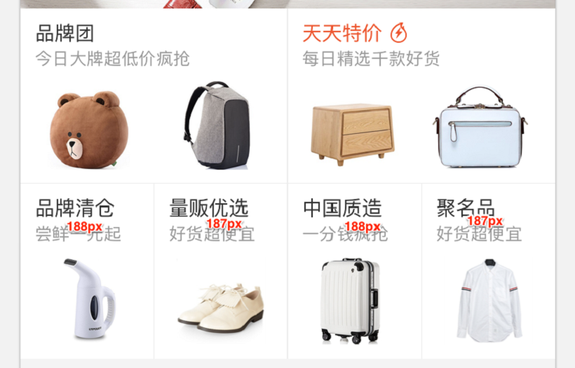

<!DOCTYPE html>
<html>
<head><meta name="generator" content="Hexo 3.8.0">
  <meta charset="utf-8">
  
  <title>再聊移动端适配之vw、vh | LIUXUEWEN&#39;S BLOG</title>
  <meta name="viewport" content="width=device-width, initial-scale=1, maximum-scale=1">
  
    <meta name="keywords" content="LIUXUEWEN,LIUXUEWEN's Blog">
  
  <meta name="description" content="一、引言  &amp;emsp;&amp;emsp;Flexible到今天也有几年的历史了，解决了适配终端的很多问题，这套方案相对而言是一个较为成熟的方案。但它并不是万能的，也不是最优秀的，他还是存在一些问题的，比如iframe的引用，有时候就把我们自己给埋进去了。下面将介绍一种新的适配方案。   先上这套适配的效果看看：   iPhone系列效果      部分Android效果      上面的Demo，测试">
<meta name="keywords" content="前端-移动端适配">
<meta property="og:type" content="article">
<meta property="og:title" content="再聊移动端适配之vw、vh">
<meta property="og:url" content="http://liuxuewen-site.github.io/2018/02/02/mobile-bs-vwvh/index.html">
<meta property="og:site_name" content="LIUXUEWEN&#39;S BLOG">
<meta property="og:description" content="一、引言  &amp;emsp;&amp;emsp;Flexible到今天也有几年的历史了，解决了适配终端的很多问题，这套方案相对而言是一个较为成熟的方案。但它并不是万能的，也不是最优秀的，他还是存在一些问题的，比如iframe的引用，有时候就把我们自己给埋进去了。下面将介绍一种新的适配方案。   先上这套适配的效果看看：   iPhone系列效果      部分Android效果      上面的Demo，测试">
<meta property="og:locale" content="default">
<meta property="og:image" content="http://liuxuewen-site.github.io/2018/02/02/mobile-bs-vwvh/1.png">
<meta property="og:image" content="http://liuxuewen-site.github.io/2018/02/02/mobile-bs-vwvh/2.png">
<meta property="og:image" content="http://liuxuewen-site.github.io/2018/02/02/mobile-bs-vwvh/3.png">
<meta property="og:image" content="http://liuxuewen-site.github.io/2018/02/02/mobile-bs-vwvh/4.png">
<meta property="og:image" content="http://liuxuewen-site.github.io/2018/02/02/mobile-bs-vwvh/5.png">
<meta property="og:image" content="http://liuxuewen-site.github.io/2018/02/02/mobile-bs-vwvh/6.png">
<meta property="og:updated_time" content="2019-01-25T10:13:19.899Z">
<meta name="twitter:card" content="summary">
<meta name="twitter:title" content="再聊移动端适配之vw、vh">
<meta name="twitter:description" content="一、引言  &amp;emsp;&amp;emsp;Flexible到今天也有几年的历史了，解决了适配终端的很多问题，这套方案相对而言是一个较为成熟的方案。但它并不是万能的，也不是最优秀的，他还是存在一些问题的，比如iframe的引用，有时候就把我们自己给埋进去了。下面将介绍一种新的适配方案。   先上这套适配的效果看看：   iPhone系列效果      部分Android效果      上面的Demo，测试">
<meta name="twitter:image" content="http://liuxuewen-site.github.io/2018/02/02/mobile-bs-vwvh/1.png">
  
  
    <link rel="icon" href="/favicon.ico">
  
  <link href="//cdn.bootcss.com/font-awesome/4.7.0/css/font-awesome.min.css" rel="stylesheet" type="text/css">
  <link rel="stylesheet" href="/css/style.css">
  <script src="/js/pace.min.js"></script>
  

  
  

</head>
</html>
<body>
  <div id="container">
      <header id="header">
    <div id="banner"></div>
    <div id="header-outer">
        <div id="header-menu" class="header-menu-pos animated">
            <div class="header-menu-container">
                <a href="/" class="left">
                    <span class="site-title">I AM LIUXUEWEN</span>
                </a>
                <nav id="header-menu-nav" class="right">
                    
                    <a href="/">
                        <i class="fa fa-home"></i>
                        <span>Home</span>
                    </a>
                    
                    <a href="/archives">
                        <i class="fa fa-archive"></i>
                        <span>Archives</span>
                    </a>
                    
                    <a href="/about">
                        <i class="fa fa-user"></i>
                        <span>About</span>
                    </a>
                    
                </nav>
                <a class="mobile-header-menu-button">
                    <i class="fa fa-bars"></i>
                </a>
            </div>
        </div>
        <div id="header-row">
            <div id="logo">
                <a href="/">
                    
                </a>
            </div>
            <div class="header-info">
                <div id="header-title">
                    
                    <h2>
                        I AM LIUXUEWEN
                    </h2>
                    
                </div>
                <div id="header-description">
                    
                    <h3>
                        一个 宅不住 的 IT程序员
                    </h3>
                    
                </div>
            </div>
            <nav class="header-nav">
                <div class="social">
                    
                        <a title="Github" target="_blank" href="//github.com/liuxuewen-site">
                            <i class="fa fa-github fa-2x"></i></a>
                    
                        <a title="Weibo" "="">
                            <i class="fa fa-weibo fa-2x"></i></a>
                    
                        <a title="Weixin" "="">
                            <i class="fa fa-weixin fa-2x"></i></a>
                    
                </div>
            </nav>
        </div>
    </div>
</header>
      <div class="outer">
        <section id="main" class="body-wrap"><article id="post-mobile-bs-vwvh" class="article article-type-post" itemscope itemprop="blogPost">
  <div class="article-inner">
    
      <header class="article-header">
        
  
    <h1 class="post-title" itemprop="name">
      再聊移动端适配之vw、vh
    </h1>
    <div class="post-title-bar">
      <ul>
          
              <li>
                  <i class="fa fa-book"></i>
                  
                      <a href="/categories/前端/">前端</a>
                  
              </li>
          
        <li>
          <i class="fa fa-calendar"></i>  2018-02-02
        </li>
        <li>
          <i class="fa fa-eye"></i>
          <span id="busuanzi_value_page_pv"></span>
        </li>
      </ul>
    </div>
  

          
      </header>
    
    <div class="article-entry post-content" itemprop="articleBody">
      
            
            <h3 id="一、引言"><a href="#一、引言" class="headerlink" title="一、引言"></a>一、引言</h3><p>  &emsp;&emsp;Flexible到今天也有几年的历史了，解决了适配终端的很多问题，这套方案相对而言是一个较为成熟的方案。但它并不是万能的，也不是最优秀的，他还是存在一些问题的，比如iframe的引用，有时候就把我们自己给埋进去了。下面将介绍一种新的适配方案。</p>
<p>  先上这套适配的效果看看：</p>
<p>  iPhone系列效果</p>
<p>  </p>
<p>  部分Android效果</p>
<p>  </p>
<p>  上面的Demo，测试了Top30的机型。目前未得到支持的：</p>
<p>  </p>
<h3 id="二、适配方案"><a href="#二、适配方案" class="headerlink" title="二、适配方案"></a>二、适配方案</h3><p>  在移动端布局，我们需要面对两个最为重要的问题：<br>  1）各终端下的适配问题<br>  2）Retina屏的细节处理</p>
<p>  不同的终端，我们面对的屏幕分辨率、DPR、1px、2x图等一系列的问题。这个布局方案也是针对性的解决这些问题，只不过解决这些问题不再是使用Hack手段（flexible）来处理，而是直接使用原生的CSS技术来处理的。</p>
<h3 id="三、终端适配"><a href="#三、终端适配" class="headerlink" title="三、终端适配"></a>三、终端适配</h3><p>  以前的Flexible方案是通过JavaScript来模拟vw的特性，今天vw已经得到了众多浏览器的支持，即可以考虑将vw单位运用于我们的适配布局中。</p>
<p>  vw是基于Viewport视窗的长度单位，这里的视窗（Viewport）指的就是浏览器可视化的区域，而这个可视区域是window.innerWidth/window.innerHeight的大小，关于viewpoint可看 <a href="https://www.w3cplus.com/css/viewports.html" target="_blank" rel="noopener">这里</a>。用下图简单的来示意一下：</p>
<p>  <br> </p>
<p>  和Viewport相关的单位有四个，分别为vw、vh、vmin和vmax:<br>  1）vw：是Viewport’s width的简写,1vw等于window.innerWidth的1%<br>  2）vh：是Viewport’s height的简写，1vh等于window.innerHeihgt的1%<br>  3）vmin：vmin的值是当前vw和vh中较小的值<br>  4）vmax：vmax的值是当前vw和vh中较大的值</p>
<p>  vmin和vmax是根据Viewport中长度偏大的那个维度值计算出来的，如果window.innerHeight &gt; window.innerWidth则vmin取百分之一的window.innerWidth，vmax取百分之一的window.innerHeight计算。看图：</p>
<p>  <br></p>
<p>  所以在这个方案中大胆的使用vw来替代以前Flexible中的rem缩放方案。回归到我们的实际业务中来，目前出视觉设计稿，都是使用750px宽度的，从上面的原理来看，那么100vw = 750px，即1vw = 7.5px。那么我们可以根据设计图上的px值直接转换成对应的vw值。</p>
<p>  看到这里，跟flexible一样又要计算，同样可以使用PostCSS的插件 <a href="https://github.com/evrone/postcss-px-to-viewport" target="_blank" rel="noopener">postcss-px-to-viewport</a> ，让我们可以直接在代码中写px，比如：<br>  <figure class="highlight bash"><table><tr><td class="gutter"><pre><span class="line">1</span><br><span class="line">2</span><br><span class="line">3</span><br><span class="line">4</span><br><span class="line">5</span><br><span class="line">6</span><br><span class="line">7</span><br><span class="line">8</span><br><span class="line">9</span><br><span class="line">10</span><br><span class="line">11</span><br><span class="line">12</span><br><span class="line">13</span><br></pre></td><td class="code"><pre><span class="line">[w-369]&#123; </span><br><span class="line">  width: 369px; </span><br><span class="line">&#125; </span><br><span class="line">[w-369] h2 span &#123; </span><br><span class="line">  background: <span class="comment">#FF5000; </span></span><br><span class="line">  color: <span class="comment">#fff; </span></span><br><span class="line">  display: inline-block; </span><br><span class="line">  border-radius: 4px; </span><br><span class="line">  font-size: 20px; </span><br><span class="line">  text-shadow: 0 2px 2px <span class="comment">#FF5000; </span></span><br><span class="line">  padding: 2px 5px; </span><br><span class="line">  margin-right: 5px; </span><br><span class="line">&#125;</span><br></pre></td></tr></table></figure></p>
<p>  PostCSS编译之后就是我们所需要的带vw代码：<br>  <figure class="highlight bash"><table><tr><td class="gutter"><pre><span class="line">1</span><br><span class="line">2</span><br><span class="line">3</span><br><span class="line">4</span><br><span class="line">5</span><br><span class="line">6</span><br><span class="line">7</span><br><span class="line">8</span><br><span class="line">9</span><br><span class="line">10</span><br><span class="line">11</span><br><span class="line">12</span><br><span class="line">13</span><br><span class="line">14</span><br><span class="line">15</span><br></pre></td><td class="code"><pre><span class="line">[w-369] &#123; </span><br><span class="line">  width: 49.2vw; </span><br><span class="line">&#125; </span><br><span class="line">[w-369] h2 span &#123; </span><br><span class="line">  background: <span class="comment">#ff5000; </span></span><br><span class="line">  color: <span class="comment">#fff; </span></span><br><span class="line">  display: inline-block; </span><br><span class="line">  border-radius: .53333vw; </span><br><span class="line">  text-shadow: 0 0.26667vw 0.26667vw <span class="comment">#ff5000; </span></span><br><span class="line">  padding: .26667vw .66667vw; </span><br><span class="line">&#125; </span><br><span class="line">[w-369] h2 span, [w-369] i &#123; </span><br><span class="line">  font-size: 2.66667vw; </span><br><span class="line">  margin-right: .66667vw; </span><br><span class="line">&#125;</span><br></pre></td></tr></table></figure></p>
<p>  在实际使用的时候，你可以对该插件进行相关的参数配置：<br>  <figure class="highlight bash"><table><tr><td class="gutter"><pre><span class="line">1</span><br><span class="line">2</span><br><span class="line">3</span><br><span class="line">4</span><br><span class="line">5</span><br><span class="line">6</span><br><span class="line">7</span><br><span class="line">8</span><br><span class="line">9</span><br></pre></td><td class="code"><pre><span class="line"><span class="string">"postcss-px-to-viewport"</span>: &#123; </span><br><span class="line">  viewportWidth: 750, </span><br><span class="line">  viewportHeight: 1334, </span><br><span class="line">  unitPrecision: 5, </span><br><span class="line">  viewportUnit: <span class="string">'vw'</span>, </span><br><span class="line">  selectorBlackList: [], </span><br><span class="line">  minPixelValue: 1, </span><br><span class="line">  mediaQuery: <span class="literal">false</span> </span><br><span class="line">&#125;</span><br></pre></td></tr></table></figure></p>
<p>  假设你的设计稿不是750px而是1125px，那么你就可以修改vewportWidth的值。有关于该插件的详细介绍，可以阅读其 <a href="https://github.com/evrone/postcss-px-to-viewport" target="_blank" rel="noopener">官方使用文档</a> 。</p>
<p>  上面解决了px到vw的转换计算。那么在哪些地方可以使用vw来适配我们的页面。根据相关的测试：<br>  1）容器适配，可以使用vw<br>  2）文本的适配，可以使用vw<br>  3）大于1px的边框、圆角、阴影都可以使用vw<br>  4）内距和外距，可以使用vw</p>
<p>  另外有一个细节需要特别的提出，比如我们有一个这样的设计：</p>
<p>  <br></p>
<p>  如果我们直接使用：<br>  <figure class="highlight bash"><table><tr><td class="gutter"><pre><span class="line">1</span><br><span class="line">2</span><br><span class="line">3</span><br><span class="line">4</span><br><span class="line">5</span><br><span class="line">6</span><br></pre></td><td class="code"><pre><span class="line">[w-188-246] &#123; </span><br><span class="line">  width: 188px; </span><br><span class="line">&#125; </span><br><span class="line">[w-187-246]&#123; </span><br><span class="line">  width: 187px </span><br><span class="line">&#125;</span><br></pre></td></tr></table></figure></p>
<p>  最终的效果会造成[w-187-246]容器的高度小于[w-188-246]容器的高度。这个时候我们就需要考虑到 <a href="https://www.w3cplus.com/css/aspect-ratio.html" target="_blank" rel="noopener">容器的长宽比缩放</a> 。推荐一个PostCSS插件 <a href="https://github.com/yisibl/postcss-aspect-ratio-mini" target="_blank" rel="noopener">postcss-aspect-ratio-mini</a> ,这个插件使用很简单，不需要做任何的配置，你只需要本地安装一下就OK。使用的时候如下：<br>  <figure class="highlight plain"><table><tr><td class="gutter"><pre><span class="line">1</span><br><span class="line">2</span><br><span class="line">3</span><br><span class="line">4</span><br><span class="line">5</span><br><span class="line">6</span><br><span class="line">7</span><br><span class="line">8</span><br><span class="line">9</span><br><span class="line">10</span><br><span class="line">11</span><br><span class="line">12</span><br><span class="line">13</span><br><span class="line">14</span><br><span class="line">15</span><br><span class="line">16</span><br><span class="line">17</span><br><span class="line">18</span><br><span class="line">19</span><br><span class="line">20</span><br><span class="line">21</span><br><span class="line">22</span><br></pre></td><td class="code"><pre><span class="line">[aspectratio] &#123; </span><br><span class="line">  position: relative; </span><br><span class="line">&#125; </span><br><span class="line">[aspectratio]::before &#123; </span><br><span class="line">  content: &apos;&apos;; </span><br><span class="line">  display: block; </span><br><span class="line">  width: 1px; </span><br><span class="line">  margin-left: -1px; </span><br><span class="line">  height: 0; </span><br><span class="line">&#125; </span><br><span class="line">[aspectratio-content] &#123; </span><br><span class="line">  position: absolute; </span><br><span class="line">  top: 0; </span><br><span class="line">  left: 0; </span><br><span class="line">  right: 0; </span><br><span class="line">  bottom: 0; </span><br><span class="line">  width: 100%; </span><br><span class="line">  height: 100%; </span><br><span class="line">&#125; </span><br><span class="line">[aspectratio][aspect-ratio=&quot;188/246&quot;]&#123; </span><br><span class="line">  aspect-ratio: &apos;188:246&apos;; </span><br><span class="line">&#125;</span><br></pre></td></tr></table></figure></p>
<p>  编译出来：<br>  <figure class="highlight bash"><table><tr><td class="gutter"><pre><span class="line">1</span><br><span class="line">2</span><br><span class="line">3</span><br></pre></td><td class="code"><pre><span class="line">[aspectratio][aspect-ratio=<span class="string">"188/246"</span>]:before &#123; </span><br><span class="line">  padding-top: 130.85106382978725%; </span><br><span class="line">&#125;</span><br></pre></td></tr></table></figure></p>
<p>  关于实现长宽比的效果，可以阅读相关文章:<br>  <a href="https://www.w3cplus.com/css/aspect-ratio.html" target="_blank" rel="noopener">CSS实现长宽比的几种方案</a><br>  <a href="https://www.w3cplus.com/css/aspect-ratio-boxes.html" target="_blank" rel="noopener">容器长宽比</a><br>  <a href="https://www.w3cplus.com/css/experiments-in-fixed-aspect-ratios.html" target="_blank" rel="noopener">Web中如何实现纵横比</a><br>  <a href="https://www.w3cplus.com/css/css-polyfluidsizing-using-calc-vw-breakpoints-and-linear-equations.html" target="_blank" rel="noopener">实现精准的流体排版原理</a></p>
<h3 id="四、解决1px方案"><a href="#四、解决1px方案" class="headerlink" title="四、解决1px方案"></a>四、解决1px方案</h3><p>  前面提到过，对于1px是不建议将其转换成对应的vw单位的，但在Retina下，我们始终是需要面对如何解决1px的问题。在<a href="https://www.w3cplus.com/css/fix-1px-for-retina.html" target="_blank" rel="noopener">《再谈Retina下1px的解决方案》</a>文章中提供了多种解决1px的方案。在这里推荐另外一种解决1px的方案，依旧是使用PostCSS插件，解决1px可以使用 <a href="https://github.com/jonathantneal/postcss-write-svg" target="_blank" rel="noopener">postcss-write-svg</a> 。</p>
<p>  使用postcss-write-svg你可以通过border-image或者background-image两种方式来处理。<br>  border-image比如：<br>  <figure class="highlight bash"><table><tr><td class="gutter"><pre><span class="line">1</span><br><span class="line">2</span><br><span class="line">3</span><br><span class="line">4</span><br><span class="line">5</span><br><span class="line">6</span><br><span class="line">7</span><br><span class="line">8</span><br><span class="line">9</span><br><span class="line">10</span><br><span class="line">11</span><br></pre></td><td class="code"><pre><span class="line">@svg 1px-border &#123; </span><br><span class="line">  height: 2px; </span><br><span class="line">  @rect &#123; </span><br><span class="line">  	fill: var(--color, black); </span><br><span class="line">  	width: 100%; height: 50%; </span><br><span class="line">  &#125; </span><br><span class="line">&#125; </span><br><span class="line">.example &#123; </span><br><span class="line">  border: 1px solid transparent; </span><br><span class="line">  border-image: svg(1px-border param(--color <span class="comment">#00b1ff)) 2 2 stretch; </span></span><br><span class="line">&#125;</span><br></pre></td></tr></table></figure></p>
<p>  这样PostCSS会自动帮你把CSS编译出来：<br>  <figure class="highlight bash"><table><tr><td class="gutter"><pre><span class="line">1</span><br><span class="line">2</span><br><span class="line">3</span><br><span class="line">4</span><br></pre></td><td class="code"><pre><span class="line">.example &#123; </span><br><span class="line">  border: 1px solid transparent; </span><br><span class="line">  border-image: url(<span class="string">"data:image/svg+xml;charset=utf-8,%3Csvg xmlns='http://www.w3.org/2000/svg' height='2px'%3E%3Crect fill='%2300b1ff' width='100%25' height='50%25'/%3E%3C/svg%3E"</span>) 2 2 stretch; </span><br><span class="line">&#125;</span><br></pre></td></tr></table></figure></p>
<p>  background-image比如：<br>  <figure class="highlight bash"><table><tr><td class="gutter"><pre><span class="line">1</span><br><span class="line">2</span><br><span class="line">3</span><br><span class="line">4</span><br><span class="line">5</span><br><span class="line">6</span><br><span class="line">7</span><br><span class="line">8</span><br><span class="line">9</span><br><span class="line">10</span><br></pre></td><td class="code"><pre><span class="line">@svg square &#123; </span><br><span class="line">  @rect &#123; </span><br><span class="line">  	fill: var(--color, black); </span><br><span class="line">  	width: 100%; </span><br><span class="line">  	height: 100%; </span><br><span class="line">  &#125; </span><br><span class="line">&#125; </span><br><span class="line"><span class="comment">#example &#123; </span></span><br><span class="line">  background: white svg(square param(--color <span class="comment">#00b1ff)); </span></span><br><span class="line">&#125;</span><br></pre></td></tr></table></figure></p>
<p>  编译出来就是：<br>  <figure class="highlight bash"><table><tr><td class="gutter"><pre><span class="line">1</span><br><span class="line">2</span><br><span class="line">3</span><br></pre></td><td class="code"><pre><span class="line"><span class="comment">#example &#123; </span></span><br><span class="line">  background: white url(<span class="string">"data:image/svg+xml;charset=utf-8,%3Csvg xmlns='http://www.w3.org/2000/svg'%3E%3Crect fill='%2300b1ff' width='100%25' height='100%25'/%3E%3C/svg%3E"</span>); </span><br><span class="line">&#125;</span><br></pre></td></tr></table></figure></p>
<h3 id="五、总结"><a href="#五、总结" class="headerlink" title="五、总结"></a>五、总结</h3><p>  这个方案简单易用，测试下来，基本能达到所需的需求，有一点千万别忘了，记得在<head><meta name="generator" content="Hexo 3.8.0">中添加：<br>  <figure class="highlight bash"><table><tr><td class="gutter"><pre><span class="line">1</span><br></pre></td><td class="code"><pre><span class="line">&lt;meta name=<span class="string">"viewport"</span> content=<span class="string">"width=device-width,initial-scale=1,maximum-scale=1,minimum-scale=1,user-scalable=no"</span> /&gt;</span><br></pre></td></tr></table></figure></head></p>
<p>  <br></p>
<p>  这里使用了多个PostCSS的插件，能帮助我们解决很多问题。在W3cplus提供了一些有关于 <a href="https://www.w3cplus.com/blog/tags/516.html" target="_blank" rel="noopener">PostCSS</a> 相关的文章。<a href="https://www.w3cplus.com/preprocessor/postcss-book.html" target="_blank" rel="noopener">《深入PostCSS Web设计》</a> 一书也有更深讲解。</p>
<h3 id="六、降级处理"><a href="#六、降级处理" class="headerlink" title="六、降级处理"></a>六、降级处理</h3><p>  前面提到过，到目前为止，T30的机型中还有几款机型是不支持vw的适配方案。那么如果业务需要，应该怎么处理呢？有两种方式可以进行降级处理：<br>  1）CSS Houdini：通过 <a href="https://github.com/w3c/css-houdini-drafts/wiki" target="_blank" rel="noopener">CSS Houdini</a> 针对vw做处理，调用 <a href="https://www.w3.org/TR/css-typed-om-1/" target="_blank" rel="noopener">CSS Typed OM Level1</a> 提供的 <a href="https://www.w3.org/TR/css-typed-om-1/#numericvalue-serialization" target="_blank" rel="noopener">CSSUnitValue API</a> 。<br>  2）CSS Polyfill：通过相应的Polyfill做相应的处理，目前针对于vw单位的Polyfill主要有：<a href="https://github.com/saabi/vminpoly" target="_blank" rel="noopener">vminpoly</a> 、<a href="https://github.com/rodneyrehm/viewport-units-buggyfill" target="_blank" rel="noopener">Viewport Units Buggyfill</a> 、<a href="https://gist.github.com/LeaVerou/1347501" target="_blank" rel="noopener">vunits.js</a> 和 <a href="https://github.com/Modernizr/Modernizr/wiki/HTML5-Cross-Browser-Polyfills" target="_blank" rel="noopener">Modernizr</a> 。推荐采用Viewport Units Buggyfill。</p>
<h3 id="七、Viewport不足之处"><a href="#七、Viewport不足之处" class="headerlink" title="七、Viewport不足之处"></a>七、Viewport不足之处</h3><p>  采用vw来做适配处理并不是只有好处没有任何缺点。有一些细节之处还是存在一定缺陷的。</p>
<p>  比如当容器使用vw单位，margin采用px单位时，很容易造成整体宽度超过100vw，从而影响布局效果。对于类似这样的现象，我们可以采用相关的技术进行规避。比如将margin换成padding，并且配合box-sizing。只不过这不是最佳方案，随着将来浏览器或应用自身的Webview对calc()函数的支持之后，碰到vw和px混合使用的时候，可以结合calc()函数一起使用，这样就可以完美的解决。</p>
<p>  另外一点，px转换成vw单位，多少还会存在一定的像素差，毕竟很多时候无法完全整除。</p>
<p>  此外，兼容性方面还是需要改进……</p>
<p>  当然还有……</p>
<p>标注：</p>
<ul>
<li>参考资料1：<a href="https://www.w3cplus.com/css/vw-for-layout.html" target="_blank" rel="noopener">https://www.w3cplus.com/css/vw-for-layout.html</a></li>
</ul>

            <div class="post-copyright">
    <div class="content">
        <p>最后更新： 2019年01月25日 18:13</p>
        <p>原始链接： <a class="post-url" href="/2018/02/02/mobile-bs-vwvh/" title="再聊移动端适配之vw、vh">http://liuxuewen-site.github.io/2018/02/02/mobile-bs-vwvh/</a></p>
        <footer>
            <a href="http://liuxuewen-site.github.io">
                
                liuxuewen
            </a>
        </footer>
    </div>
</div>

      
        
            
<div class="page-reward">
    <a id="rewardBtn" href="javascript:;">赏</a>
</div>

<div id="reward" class="post-modal reward-lay">
    <a class="close" href="javascript:;" id="reward-close">×</a>
    <span class="reward-title">
        <i class="icon icon-quote-left"></i>
        请我吃糖~
        <i class="icon icon-quote-right"></i>
    </span>
    <div class="reward-content">
        
        <div class="reward-code">
            
        </div>
        <div class="reward-select">
            
            <label class="reward-select-item checked" data-id="wechat" data-wechat="/images/wechat_code.jpg">
                
            </label>
            
            
            <label class="reward-select-item" data-id="alipay" data-alipay="/images/alipay_code.jpg">
                
            </label>
            
        </div>
    </div>
</div>


        
    </div>
    <footer class="article-footer">
        
        
<div class="post-share">
    <a href="javascript:;" id="share-sub" class="post-share-fab">
        <i class="fa fa-share-alt"></i>
    </a>
    <div class="post-share-list" id="share-list">
        <ul class="share-icons">
          <li>
            <a class="weibo share-sns" target="_blank" href="http://service.weibo.com/share/share.php?url=http://liuxuewen-site.github.io/2018/02/02/mobile-bs-vwvh/&title=《再聊移动端适配之vw、vh》 — LIUXUEWEN'S BLOG&pic=http://liuxuewen-site.github.ioimages/logo.png" data-title="微博">
              <i class="fa fa-weibo"></i>
            </a>
          </li>
          <li>
            <a class="weixin share-sns" id="wxFab" href="javascript:;" data-title="微信">
              <i class="fa fa-weixin"></i>
            </a>
          </li>
          <li>
            <a class="qq share-sns" target="_blank" href="http://connect.qq.com/widget/shareqq/index.html?url=http://liuxuewen-site.github.io/2018/02/02/mobile-bs-vwvh/&title=《再聊移动端适配之vw、vh》 — LIUXUEWEN'S BLOG&source=" data-title="QQ">
              <i class="fa fa-qq"></i>
            </a>
          </li>
          <li>
            <a class="facebook share-sns" target="_blank" href="https://www.facebook.com/sharer/sharer.php?u=http://liuxuewen-site.github.io/2018/02/02/mobile-bs-vwvh/" data-title="Facebook">
              <i class="fa fa-facebook"></i>
            </a>
          </li>
          <li>
            <a class="twitter share-sns" target="_blank" href="https://twitter.com/intent/tweet?text=《再聊移动端适配之vw、vh》 — LIUXUEWEN'S BLOG&url=http://liuxuewen-site.github.io/2018/02/02/mobile-bs-vwvh/&via=http://liuxuewen-site.github.io" data-title="Twitter">
              <i class="fa fa-twitter"></i>
            </a>
          </li>
          <li>
            <a class="google share-sns" target="_blank" href="https://plus.google.com/share?url=http://liuxuewen-site.github.io/2018/02/02/mobile-bs-vwvh/" data-title="Google+">
              <i class="fa fa-google-plus"></i>
            </a>
          </li>
        </ul>
     </div>
</div>
<div class="post-modal wx-share" id="wxShare">
    <a class="close" href="javascript:;" id="wxShare-close">×</a>
    <p>扫一扫，分享到微信</p>
    
</div>

<div class="mask"></div>

        
        <ul class="article-footer-menu">
            
            
  <li class="article-footer-tags">
    <i class="fa fa-tags"></i>
      
    <a href="/tags/前端-移动端适配/" class="color4">前端-移动端适配</a>
      
  </li>

        </ul>
        
    </footer>
  </div>
</article>


    <aside class="post-toc-pos post-toc-top" id="post-toc">
        <nav class="post-toc-wrap">
            <ol class="post-toc"><li class="post-toc-item post-toc-level-3"><a class="post-toc-link" href="#一、引言"><span class="post-toc-text">一、引言</span></a></li><li class="post-toc-item post-toc-level-3"><a class="post-toc-link" href="#二、适配方案"><span class="post-toc-text">二、适配方案</span></a></li><li class="post-toc-item post-toc-level-3"><a class="post-toc-link" href="#三、终端适配"><span class="post-toc-text">三、终端适配</span></a></li><li class="post-toc-item post-toc-level-3"><a class="post-toc-link" href="#四、解决1px方案"><span class="post-toc-text">四、解决1px方案</span></a></li><li class="post-toc-item post-toc-level-3"><a class="post-toc-link" href="#五、总结"><span class="post-toc-text">五、总结</span></a></li><li class="post-toc-item post-toc-level-3"><a class="post-toc-link" href="#六、降级处理"><span class="post-toc-text">六、降级处理</span></a></li><li class="post-toc-item post-toc-level-3"><a class="post-toc-link" href="#七、Viewport不足之处"><span class="post-toc-text">七、Viewport不足之处</span></a></li></ol>
        </nav>
    </aside>
    

<nav id="article-nav">
  
    <a href="/2018/02/03/frontEnd-basic3/" id="article-nav-newer" class="article-nav-link-wrap">

      <span class="article-nav-title">
        <i class="fa fa-hand-o-left" aria-hidden="true"></i>
        
          前端基础考题3
        
      </span>
    </a>
  
  
    <a href="/2018/02/01/frontEnd-basic2/" id="article-nav-older" class="article-nav-link-wrap">
      <span class="article-nav-title">前端基础考题2</span>
      <i class="fa fa-hand-o-right" aria-hidden="true"></i>
    </a>
  
</nav>


    
</section>
        
      </div>
      <footer id="footer">
  <div class="outer">
    <div id="footer-info" class="inner">
      
<p>
    <span id="busuanzi_container_site_uv" style="display:none">
        总访客数：<span id="busuanzi_value_site_uv"></span>
    </span>
    <span id="busuanzi_container_site_pv" style="display:none">
        总访问量：<span id="busuanzi_value_site_pv"></span>
    </span>
</p>


      <!-- <p>
        Powered by  <a href="http://hexo.io/" target="_blank">Hexo</a>
        Theme <a href="//github.com/wongminho/hexo-theme-miho" target="_blank">MiHo</a>
      &copy; 2019 liuxuewen<br>
      </p> -->
      <p>
        1320325272@qq.com 
        liuxuewen
      </p>
    </div>
  </div>
</footer>
    <script async src="//busuanzi.ibruce.info/busuanzi/2.3/busuanzi.pure.mini.js"></script>
<script src="//cdn.bootcss.com/jquery/3.2.1/jquery.min.js"></script>
<script>
  var mihoConfig = {
      root: "http://liuxuewen-site.github.io",
      animate: true,
      isHome: false,
      share: true,
      reward: 1
  }
</script>
<div class="sidebar">
    <div id="sidebar-search" title="Search">
        <i class="fa fa-search"></i>
    </div>
    <div id="sidebar-category" title="Categories">
        <i class="fa fa-book"></i>
    </div>
    <div id="sidebar-tag" title="Tags">
        <i class="fa fa-tags"></i>
    </div>
    <div id="sidebar-top">
        <span class="sidebar-top-icon"><i class="fa fa-angle-up"></i></span>
    </div>
</div>
<div class="sidebar-menu-box" id="sidebar-menu-box">
    <div class="sidebar-menu-box-container">
        <div id="sidebar-menu-box-categories">
            <a class="category-link" href="/categories/hexo/">hexo</a><a class="category-link" href="/categories/前端/">前端</a><a class="category-link" href="/categories/后台/">后台</a><a class="category-link" href="/categories/数据结构/">数据结构</a><a class="category-link" href="/categories/网络协议/">网络协议</a><a class="category-link" href="/categories/项目/">项目</a>
        </div>
        <div id="sidebar-menu-box-tags">
            <a href="/tags/hexo/" style="font-size: 12.86px;">hexo</a> <a href="/tags/前端-CSS/" style="font-size: 14.29px;">前端-CSS</a> <a href="/tags/前端-ES6/" style="font-size: 11.43px;">前端-ES6</a> <a href="/tags/前端-HTML5/" style="font-size: 10px;">前端-HTML5</a> <a href="/tags/前端-JS/" style="font-size: 18.57px;">前端-JS</a> <a href="/tags/前端-react/" style="font-size: 20px;">前端-react</a> <a href="/tags/前端-安全性/" style="font-size: 10px;">前端-安全性</a> <a href="/tags/前端-性能优化/" style="font-size: 10px;">前端-性能优化</a> <a href="/tags/前端-服务器/" style="font-size: 11.43px;">前端-服务器</a> <a href="/tags/前端-移动端适配/" style="font-size: 11.43px;">前端-移动端适配</a> <a href="/tags/前端-考题/" style="font-size: 17.14px;">前端-考题</a> <a href="/tags/后台/" style="font-size: 10px;">后台</a> <a href="/tags/数据结构/" style="font-size: 10px;">数据结构</a> <a href="/tags/网络协议/" style="font-size: 15.71px;">网络协议</a> <a href="/tags/项目/" style="font-size: 10px;">项目</a>
        </div>
    </div>
    <a href="javascript:;" class="sidebar-menu-box-close">&times;</a>
</div>
<div class="mobile-header-menu-nav" id="mobile-header-menu-nav">
    <div class="mobile-header-menu-container">
        <span class="title">Menus</span>
        <ul class="mobile-header-menu-navbar">
            
            <li>
                <a href="/">
                    <i class="fa fa-home"></i><span>Home</span>
                </a>
            </li>
            
            <li>
                <a href="/archives">
                    <i class="fa fa-archive"></i><span>Archives</span>
                </a>
            </li>
            
            <li>
                <a href="/about">
                    <i class="fa fa-user"></i><span>About</span>
                </a>
            </li>
            
        </ul>
    </div>
    <div class="mobile-header-tag-container">
        <span class="title">Tags</span>
        <div id="mobile-header-container-tags">
            <a href="/tags/hexo/" style="font-size: 12.86px;">hexo</a> <a href="/tags/前端-CSS/" style="font-size: 14.29px;">前端-CSS</a> <a href="/tags/前端-ES6/" style="font-size: 11.43px;">前端-ES6</a> <a href="/tags/前端-HTML5/" style="font-size: 10px;">前端-HTML5</a> <a href="/tags/前端-JS/" style="font-size: 18.57px;">前端-JS</a> <a href="/tags/前端-react/" style="font-size: 20px;">前端-react</a> <a href="/tags/前端-安全性/" style="font-size: 10px;">前端-安全性</a> <a href="/tags/前端-性能优化/" style="font-size: 10px;">前端-性能优化</a> <a href="/tags/前端-服务器/" style="font-size: 11.43px;">前端-服务器</a> <a href="/tags/前端-移动端适配/" style="font-size: 11.43px;">前端-移动端适配</a> <a href="/tags/前端-考题/" style="font-size: 17.14px;">前端-考题</a> <a href="/tags/后台/" style="font-size: 10px;">后台</a> <a href="/tags/数据结构/" style="font-size: 10px;">数据结构</a> <a href="/tags/网络协议/" style="font-size: 15.71px;">网络协议</a> <a href="/tags/项目/" style="font-size: 10px;">项目</a>
        </div>
    </div>
</div>
<div class="search-wrap">
    <span class="search-close">&times;</span>
        <a href="javascript:;" class="header-icon waves-effect waves-circle waves-light" id="back">
            <i class="icon icon-lg icon-chevron-left"></i>
        </a>
        <input class="search-field" placeholder="Search..." id="keywords">
        <a id="search-submit" href="javascript:;">
            <i class="fa fa-search"></i>
        </a>
    <div class="search-container" id="search-container">
        <ul class="search-result" id="search-result">
        </ul>
    </div>
</div>

<div id="search-tpl">
    <li class="search-result-item">
        <a href="{url}" class="search-item-li">
            <span class="search-item-li-title" title="{title}">{title}</span>
        </a>
    </li>
</div>
<script src="/js/search.js"></script>
<script src="/js/main.js"></script>


  <script src="//cdn.bootcss.com/particles.js/2.0.0/particles.min.js"></script>
  <div id="particles"></div>
  <script src="/js/particles.js"></script>


  <link rel="stylesheet" href="//cdn.bootcss.com/animate.css/3.5.0/animate.min.css">
  <script src="//cdn.bootcss.com/scrollReveal.js/3.0.5/scrollreveal.js"></script>
  <script src="/js/animate.js"></script>


  <script src="/js/pop-img.js"></script>
  <script>
     $(".article-entry p img").popImg();
  </script>

  </div>
</body>
</html>